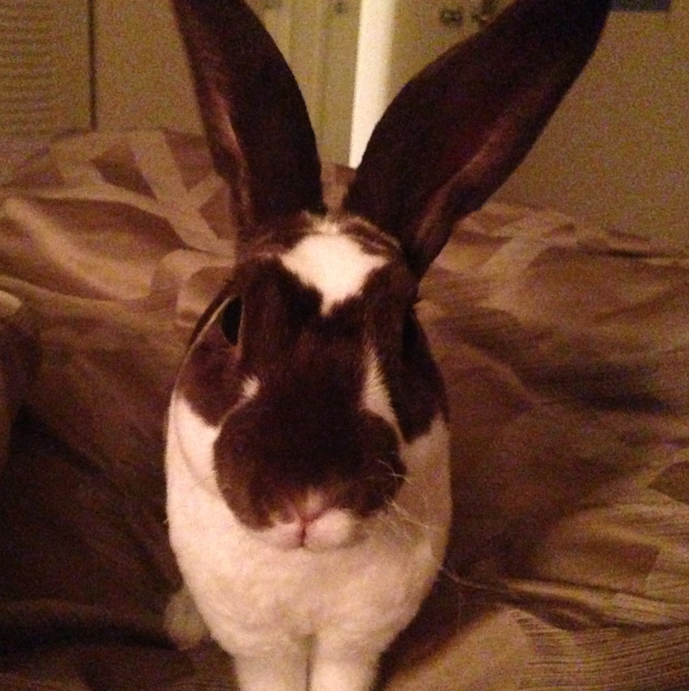

About the Word Nerd:
Ellis grew up in Merigold, MS, a town proud of its singular yellow light and miles of land before the nearest Starbucks. She has moved on to the big city of Gainesville to study at the University of Florida.
Professional Experience:
- Certified in Blackboard Support and Hootsuite
- Web design and content creation including interviews for Lamar University
- Copyediting and proofing of Carl Sheperis's Counseling Research: Quantitative, Qualitative, and Mixed Methods
- Created Sales and Job Training books to be used on-the-job at Stallion Oilfield Services
Interests:
- Reading, editing, and improving the storytelling experience
- Listening to and playing a variety of musical genres
- Watching the news evolve on social media
- Making the perfect cup of tea
- Technology that improves our future as well as our present lives

Hobbies:
- Keeping a book within ten feet at all times
- Caring for and spoiling small animals
- Kayaking, Canoeing, Hiking, or any other excuse to enjoy the outdoors
- Sewing, painting, and other attempts at arts and crafts
- Catching up on 90's television through Netflix.
Future Plans:
- Graduate from the University of Florida with Honors in May 2015
- Move to Nashville, Tennessee
- Pursue a career in the book publishing industry in whatever way possible
Ellis and a Friend on the La Chua Trail, Gainesville, Florida 2014